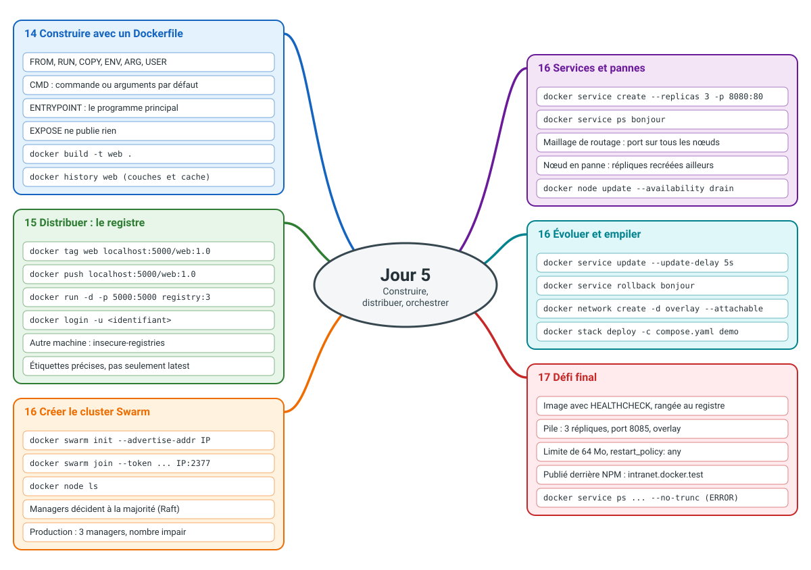

Défi final¶
Résumé
Une mise en situation sans pas-à-pas, qui mobilise tout le parcours : écrire un Dockerfile, ranger l'image dans le registre privé, dépanner le fichier de déploiement d'un collègue, déployer le service sur le cluster Swarm avec ses limites, le publier par un nom derrière Nginx Proxy Manager, puis prouver qu'il survit à la panne d'un nœud.
Le corrigé, replié en bas de page, détaille une solution et les messages d'erreur à reconnaître.
| Propriété | Valeur |
|---|---|
| Difficulté | Intermédiaire |
| Durée estimée | 1 h |
| Version décrite | Docker Engine 29.10 (mode Swarm), Nginx Proxy Manager 2.17 |
| Place dans le parcours | Partie 17 sur 17 du parcours Docker — jour 5 |
| Dernière mise à jour | 2026-11-24 |
Convention de lecture
🖥️ PC hôte · 🐧 dans une VM : 1️⃣ docker-hote (le manager), 2️⃣ docker-n2, 3️⃣ docker-n3 · 🌐 navigateur du PC. Les commandes Docker se tapent en adminlab. Les adresses 192.168.8.x du corrigé sont celles du lab de référence : les remplacer par les siennes (tableau en tête de la partie 16).
Point de départ
L'instantané 07-swarm des trois VM (fin de la partie 16) : le cluster docker-hote + docker-n2 + docker-n3, le registre privé sur IP-de-la-VM:5000, Nginx Proxy Manager sur docker-hote, et le service bonjour qui occupe le port 8080.
1. La mission¶
L'association veut un intranet : une page d'accueil simple, accessible à l'adresse http://intranet.docker.test, qui doit rester disponible même si une machine tombe en panne.
![Schéma de l'architecture visée : le navigateur du PC ouvre http://intranet.docker.test (nom déclaré dans le fichier hosts) ; Nginx Proxy Manager, sur docker-hote, transmet à IP-de-la-VM:8085. Le port 8085 est ouvert sur les trois nœuds du cluster Swarm (docker-hote, docker-n2, docker-n3) par le maillage de routage, qui envoie chaque requête à l'une des trois répliques du service intranet (limite de 64 Mo chacune). Les répliques sont reliées par un réseau overlay. L'image intranet:1.0 est rangée dans le registre privé IP-de-la-VM:5000, sur docker-hote.](../images/defi-final-cible.svg)
L'architecture à obtenir : trois répliques sur trois nœuds, publiées derrière Nginx Proxy Manager.
Un collègue a commencé le travail. Il a laissé ce fichier compose.yaml, mais « le déploiement ne marche pas » :
services:
intranet:
image: localhost:5000/intranet:1.0
ports:
- "8080:80"
networks:
- interne
deploy:
replicas: 3
networks:
interne:
driver: bridge
1.1 Ce qui est demandé¶
- Construire une image
intranet, version1.0, à partir denginx:1.31-alpine, qui sert une page d'accueil titrée « Intranet de l'association », et qui intègre un test de santé (HEALTHCHECK). - La ranger dans le registre privé du lab.
- Corriger le fichier du collègue et le déployer sur le cluster, en pile nommée
intranet, avec :- 3 répliques, réparties sur les trois nœuds ;
- le port 8085 (le 8080 est déjà pris) ;
- un réseau overlay ;
- une limite de 64 Mo de mémoire par réplique, et des répliques toujours recréées quand elles s'arrêtent, même proprement (lors de l'arrêt normal d'un nœud par exemple).
- Publier le service derrière Nginx Proxy Manager sous le nom
intranet.docker.test(fichierhostsdu PC, comme en partie 9). - Prouver que l'intranet reste accessible quand on coupe brutalement un worker, et noter combien de requêtes échouent.
1.2 Critères de réussite¶
docker service lsafficheintranet_intraneten 3/3, imageIP-de-la-VM:5000/intranet:1.0(le registre de la partie 15), port*:8085->80/tcp.- Les trois répliques sont sur trois nœuds différents (au besoin après une nouvelle répartition), et
docker pssur un nœud montre la sienne(healthy). http://intranet.docker.testaffiche la page dans le navigateur du PC.- Pendant la coupure d'un worker, le site reste joignable (au plus une ou deux requêtes perdues), et le service revient à 3/3 tout seul.
- Chaque erreur du fichier du collègue est expliquée : message obtenu, cause, correction.
Vérifier son lab
1️⃣ Sur docker-hote, une fois le défi terminé :
docker service ls --filter name=intranet
docker service ps intranet_intranet --filter desired-state=running --format "{{.Name}} {{.Node}} {{.CurrentState}}"
docker ps --filter name=intranet --format "{{.Names}} {{.Status}}"
curl -s --resolve intranet.docker.test:80:127.0.0.1 http://intranet.docker.test/ | grep -o "<title>.*</title>"
Résultat attendu (les identifiants et les durées changent) : le service en 3/3 avec l'image du registre privé et le port 8085, une réplique par nœud (Swarm étale les tâches entre les nœuds disponibles, sans le garantir : après une panne ou un redéploiement, des répliques peuvent s'entasser, et docker service update --force intranet_intranet les répartit de nouveau), la réplique locale (healthy), et le titre de la page servi à travers NPM (l'option --resolve de curl remplace le fichier hosts pour ce test) :
ID NAME MODE REPLICAS IMAGE PORTS
a3mrmkm9x9zy intranet_intranet replicated 3/3 192.168.8.71:5000/intranet:1.0 *:8085->80/tcp
intranet_intranet.1 docker-n3 Running 3 hours ago
intranet_intranet.2 docker-n2 Running 3 hours ago
intranet_intranet.3 docker-hote Running 3 hours ago
intranet_intranet.3.y8zk6cmp5uxsj51at02vakauy Up 3 hours (healthy)
<title>Intranet de l'association</title>
Indices, à ouvrir seulement en cas de blocage
Indice 1 : les erreurs de déploiement
docker stack deploy peut échouer immédiatement (message à l'écran), ou réussir puis laisser le service à 0/3. Dans ce second cas, la cause est dans docker service ps <service> --no-trunc, colonne ERROR.
Indice 2 : un réseau qui ne veut pas se corriger
Un réseau déjà créé par une pile n'est pas modifié quand on change son driver dans le fichier. Il faut le faire disparaître d'abord.
Indice 3 : localhost
Qui télécharge l'image, et sur quelle machine ? Que désigne localhost sur cette machine ?
2. Corrigé¶
Corrigé détaillé
Étape 1 : l'image¶
1️⃣ Sur docker-hote :
<!DOCTYPE html>
<html lang="fr"><head><meta charset="UTF-8"><title>Intranet de l'association</title></head>
<body><h1>Intranet de l'association</h1><p>Service déployé sur le cluster Swarm.</p></body></html>
FROM nginx:1.31-alpine
COPY index.html /usr/share/nginx/html/index.html
HEALTHCHECK --interval=10s --timeout=3s --retries=3 \
CMD wget -q --spider http://127.0.0.1/ || exit 1
Le test de santé demande la page toutes les 10 secondes, avec wget (présent dans les images Alpine) ; trois échecs de suite rendent le conteneur unhealthy, et Swarm le remplace.
Étape 2 : le registre¶
Comme en partie 16, les adresses sont celles du lab (192.168.8.71 pour docker-hote) : les remplacer par les siennes.
docker build -t 192.168.8.71:5000/intranet:1.0 .
docker push 192.168.8.71:5000/intranet:1.0
curl -s http://192.168.8.71:5000/v2/intranet/tags/list
Étape 3 : les trois erreurs du fichier¶
1️⃣ Copier le fichier du collègue tel quel, et le déployer pour lire les erreurs :
mkdir -p ~/defi/panne && cd ~/defi/panne
nano compose.yaml # coller le fichier de la section 1
docker stack deploy -c compose.yaml intranet
Erreur 1 : le réseau bridge.
Creating network intranet_interne
Creating service intranet_intranet
failed to create service intranet_intranet: Error response from daemon: The network intranet_interne cannot be used with services. Only networks scoped to the swarm can be used, such as those created with the overlay driver.
Un réseau bridge n'existe que sur une machine ; un service Swarm s'étend sur plusieurs : il lui faut un réseau overlay. Correction : driver: overlay.
Piège : après la correction, le même message revient. Le réseau intranet_interne a été créé (en bridge) au premier essai et la pile le réutilise sans le modifier. Supprimer d'abord la pile, ce qui supprime son réseau :
Erreur 2 : le port 8080 déjà pris. Au déploiement suivant :
failed to create service intranet_intranet: Error response from daemon: rpc error: code = InvalidArgument desc = port '8080' is already in use by service 'bonjour' (bfy6rguo107w4s7zfmqgqkzjy) as an ingress port
Avec le maillage de routage, un port publié est réservé sur tous les nœuds : le service bonjour de la partie 16 occupe déjà le 8080. Correction : "8085:80".
Erreur 3 : l'image en localhost. Cette fois, le déploiement réussit… mais le service ne se comporte pas comme prévu :
docker service ls --filter name=intranet
docker service ps intranet_intranet --filter desired-state=running --format '{{.Name}} {{.Node}}'
ID NAME MODE REPLICAS IMAGE PORTS
a3mrmkm9x9zy intranet_intranet replicated 2/3 localhost:5000/intranet:1.0 *:8085->80/tcp
intranet_intranet.1 docker-hote
intranet_intranet.2 docker-hote
Les répliques s'entassent toutes sur docker-hote, et le service peine à atteindre 3/3 : le critère « trois nœuds différents » démasque l'erreur. L'historique complet des tâches donne la cause :
docker service ps intranet_intranet --no-trunc --format '{{.Node}} | {{.CurrentState}} | {{.Error}}'
docker-n2 | Rejected 4 seconds ago | "failed to resolve reference "localhost:5000/intranet:1.0": failed to do request: Head "https://localhost:5000/v2/intranet/manifests/1.0": dial tcp [::1]:5000: connect: connection refused"
docker-n3 | Rejected 9 seconds ago | "failed to resolve reference "localhost:5000/intranet:1.0": … connect: connection refused"
Chaque nœud télécharge l'image lui-même. Sur docker-n2 et docker-n3, localhost désigne le nœud lui-même, où aucun registre n'écoute : connection refused, et la tâche est rejetée. Seul docker-hote, où localhost:5000 mène bien au registre (grâce aux plages locales ajoutées à insecure-registries en partie 15), lance les répliques. Le service semble fonctionner, mais une panne de docker-hote emporterait tout. Sans ces plages locales, docker-hote échouerait aussi (server gave HTTP response to HTTPS client) et le service resterait à 0/3. Correction : image: 192.168.8.71:5000/intranet:1.0.
Étape 4 : le fichier corrigé et complété¶
services:
intranet:
image: 192.168.8.71:5000/intranet:1.0
ports:
- "8085:80"
networks:
- interne
deploy:
replicas: 3
resources:
limits:
memory: 64M
restart_policy:
condition: any
networks:
interne:
driver: overlay
docker stack deploy -c compose.yaml intranet
docker service ls --filter name=intranet
docker service ps intranet_intranet --filter desired-state=running --format '{{.Name}} {{.Node}}'
ID NAME MODE REPLICAS IMAGE PORTS
a3mrmkm9x9zy intranet_intranet replicated 3/3 192.168.8.71:5000/intranet:1.0 *:8085->80/tcp
intranet_intranet.1 docker-n3
intranet_intranet.2 docker-n2
intranet_intranet.3 docker-hote
condition: any (valeur par défaut, écrite pour être explicite) : avec on-failure, une réplique arrêtée proprement, par exemple quand on éteint normalement un nœud, passe à Complete et n'est pas recréée. Après un arrêt propre des trois VM, le service peut rester à 1/3 avec on-failure ; avec any, il revient à 3/3.
Si les répliques ne sont pas réparties (restes des essais précédents) : docker service update --force intranet_intranet.
2️⃣ Sur docker-n2, la santé de la réplique qu'il exécute :
Étape 5 : la publication¶
- 🖥️ Ajouter au fichier
hostsdu PC la ligneIP-de-la-VM intranet.docker.test(partie 9). -
🌐 Dans Nginx Proxy Manager, Hôtes > Hôtes proxy > Ajouter Hôte proxy : Noms de domaine
intranet.docker.test, Schémahttp, Nom d'hôte / IP de destinationIP-de-la-VM, Port de destination8085, cocher Bloquer les exploits courants, puis Enregistrer.Ici, NPM n'utilise pas un nom de conteneur comme en partie 9 : il tourne hors du cluster (lancé par
docker compose), et n'est pas branché sur le réseau overlay de la pile. Il passe donc par le port publié, que le maillage de routage ouvre sur la VM. -
🌐 Ouvrir
http://intranet.docker.test: la page « Intranet de l'association » s'affiche. Pour passer en HTTPS, il faut un certificat qui contient le nomintranet.docker.test: celui de la partie 10 ne couvre quenextcloud,portaineretwordpress. Le refaire avec la même commandeopensslen ajoutantDNS:intranet.docker.testdanssubjectAltName, l'importer dans NPM, puis le choisir dans l'onglet SSL de l'hôte.
Étape 6 : la preuve de tolérance aux pannes¶
1️⃣ Dans une session sur docker-hote, une requête par seconde à travers NPM :
while true; do echo "$(date +%T) $(curl -s -m 2 -o /dev/null -w '%{http_code}' --resolve intranet.docker.test:80:127.0.0.1 http://intranet.docker.test/ || echo ECHEC)"; sleep 1; done
--resolve fait pointer le nom vers la VM elle-même, sans modifier son fichier hosts.
🖥️ Couper docker-n2 brutalement (comme en partie 16). Résultat attendu : une requête perdue au plus, deux secondes environ après la coupure (elle s'affiche 000ECHEC : curl écrit le code 000, puis la boucle ajoute ECHEC) ; toutes les autres répondent 200. Sur 60 requêtes, une seule a été perdue. docker node ls passe docker-n2 en Down, et la réplique perdue est recréée sur un autre nœud : docker service ls revient à 3/3.
🖥️ Rallumer docker-n2, puis 1️⃣ rééquilibrer : docker service update --force intranet_intranet.
Ce que le défi a mobilisé¶
| Partie | Utilisée pour |
|---|---|
| 9 et 10 | Fichier hosts, hôte de proxy NPM, certificat |
| 8 et 12 | Compose, healthcheck, limites de mémoire, politique de redémarrage |
| 14 | Dockerfile, HEALTHCHECK |
| 15 | Étiquette avec l'adresse du registre, push, registre non sécurisé |
| 16 | Pile Swarm, réseau overlay, maillage de routage, panne d'un nœud, rééquilibrage |
Le jour 5 en résumé¶

Le jour 5 en un coup d'œil : construire, distribuer, orchestrer.
Ressources¶
- Référence du fichier Compose :
deploy— répliques, limites, redémarrage (en anglais). docker stack deploy— options de déploiement d'une pile.- Dépanner un service Swarm —
docker service pset la colonneERROR. - Annexes du parcours — aide-mémoire des commandes, dépannage et glossaire.
- Partie précédente : Un cluster Docker Swarm · Suite : Annexes.